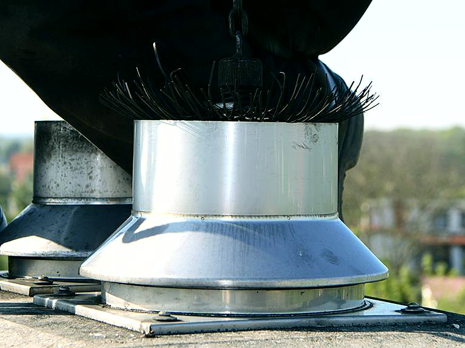
Komin od środka
Przewód, którym uchodzą spaliny: czyścimy go, poszerzamy, uszczelniamy i wpuszczamy do niego wkład.
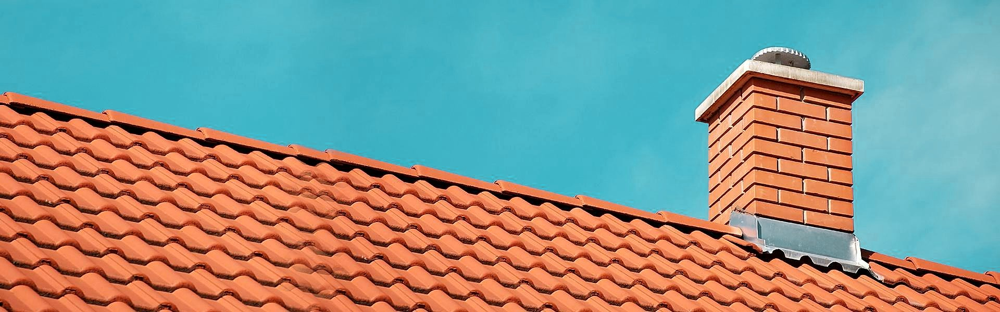
Czyścimy, frezujemy i uszczelniamy kominy, montujemy wkłady i robimy przeglądy. Od 2012 roku, w domach prywatnych i w firmach.
O firmie
Przyjeżdżamy do domów prywatnych i do firm. Jeden telefon wystarczy, żeby umówić oględziny, a po nich wiesz, jaki jest zakres prac i ile to kosztuje.
Większość prac wykonujemy bez rozbierania komina i bez kucia ścian. Jeździmy po Szczecinie i okolicach, a także do Poznania i Trójmiasta.
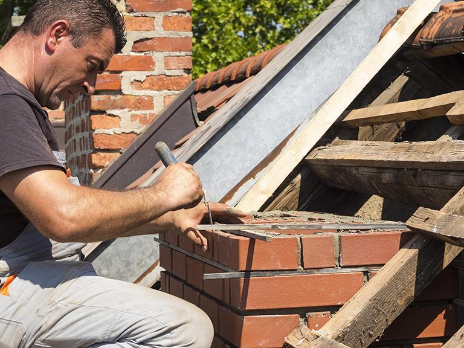
Bardzo polecam Pana Sebastiana. Bardzo szybki termin realizacji wykonania usługi. Rzeczowy, konkretny, znający odpowiedzi na wszystkie pytania.
Joanna · Stargard · marzec 2024 · szlamowanie komina · opinia z Fixly
Chcesz, żebyśmy obejrzeli Twój komin? Zacznij od telefonu albo krótkiej wiadomości.
Opowiadasz w kilku słowach, w czym kłopot, i umawiamy wizytę.
Dostajesz wycenę i listę tego, co wymaga naprawy.
Robimy dokładnie to, na co się umówiliśmy.
Oglądasz efekt razem z nami i dostajesz wskazówki na kolejne sezony.
Z naszych zleceń
Zdjęcia z naszych zleceń: frezowanie i wkłady, kominy stalowe i murowane. Wybierz rodzaj pracy, żeby zobaczyć kolejne ujęcia.
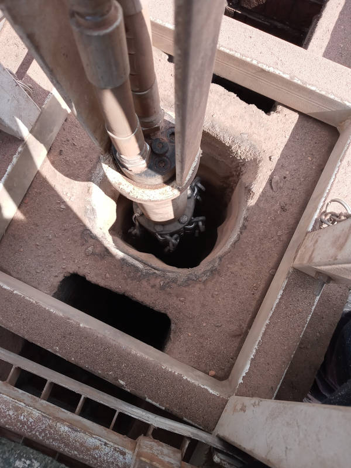
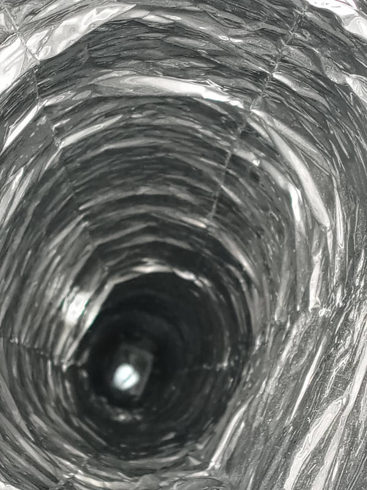
/01 Frezowanie komina i montaż wkładuKomin-Ms
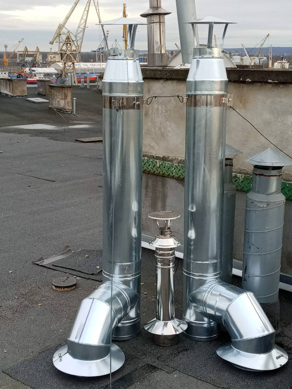
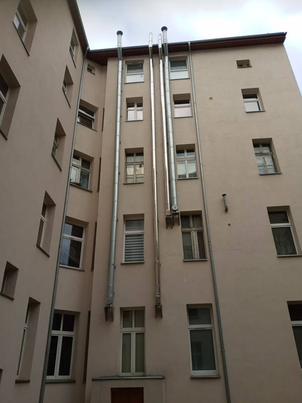
/02 Kominy i przewody staloweKomin-Ms
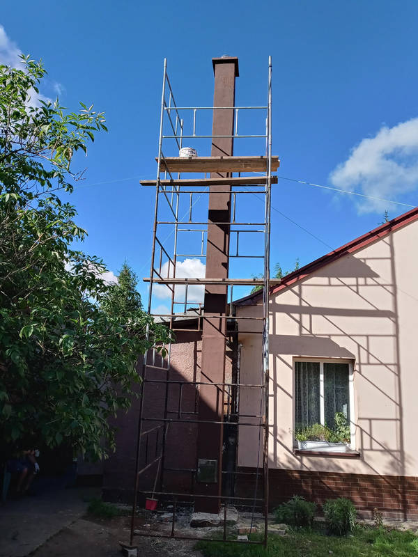
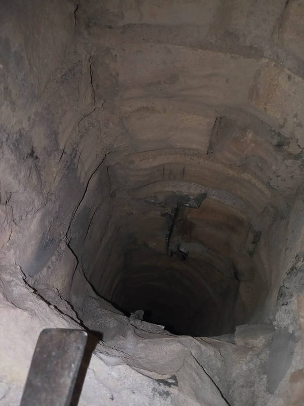
/03 Kominy murowaneKomin-Ms
Kominy stalowe i murowane, wkłady, prace na dachu. Przeciągnij zdjęcia w bok albo otwórz całą galerię.
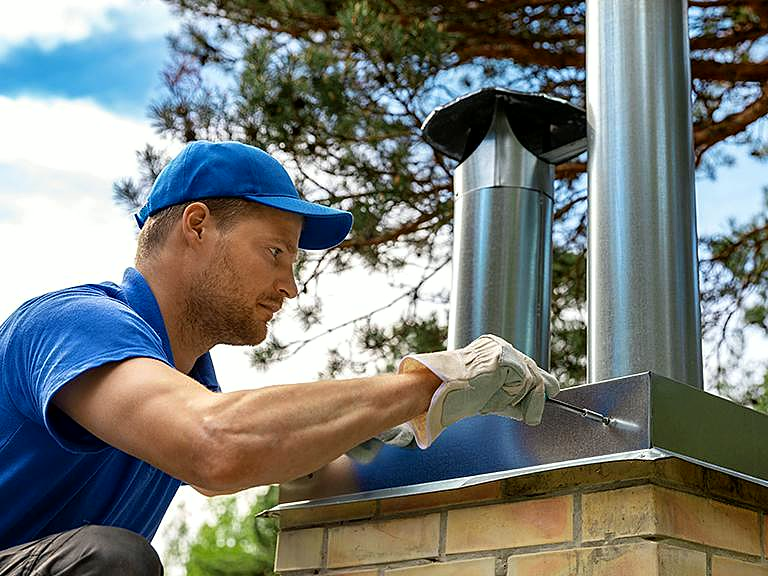
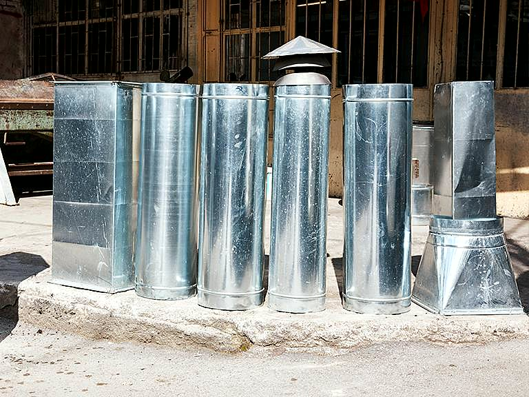
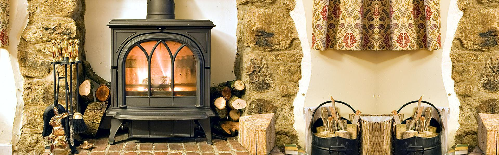
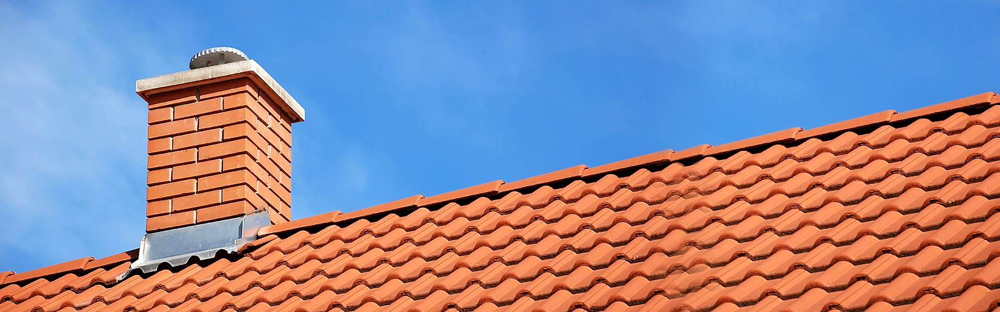
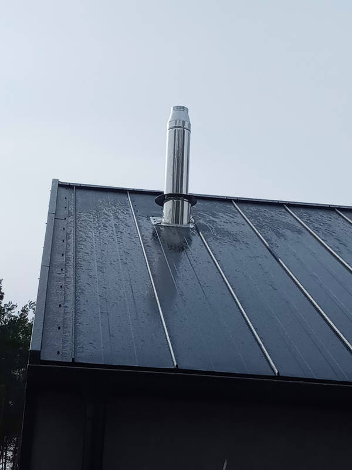
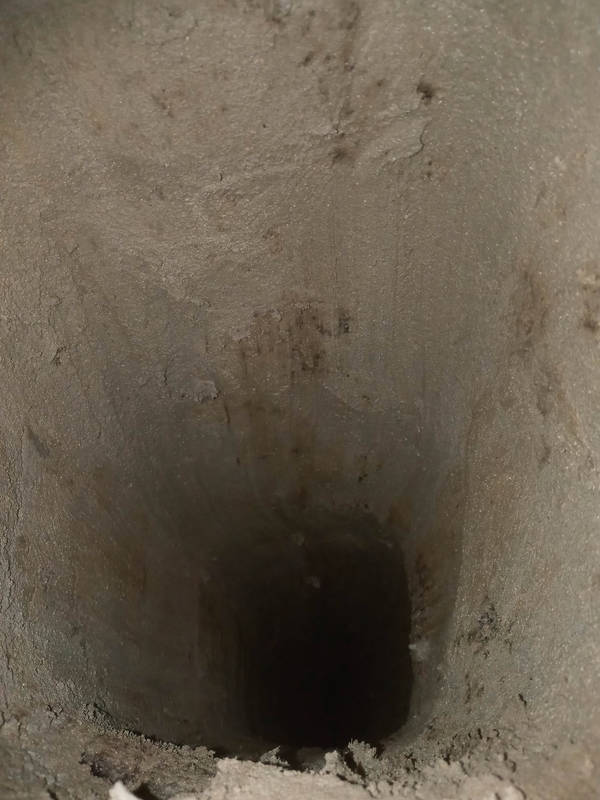
Objawy
Nie musisz znać fachowych nazw. Mówisz przez telefon, co się dzieje, a my po oględzinach wskazujemy, jaka praca jest potrzebna. Zakres i cenę znasz, zanim zaczniemy.
Zgłoszenie · telefon
„Komin słabo ciągnie”1 zdanie
Tyle wystarczy na początek.
Po oględzinach · co pomaga
Zakres i cenaprzed startem prac
Oferta
Osiem rodzajów prac w dwóch grupach. Mówimy wprost, co jest do zrobienia teraz, a co może poczekać.
Cała oferta
Przewód, którym uchodzą spaliny: czyścimy go, poszerzamy, uszczelniamy i wpuszczamy do niego wkład.
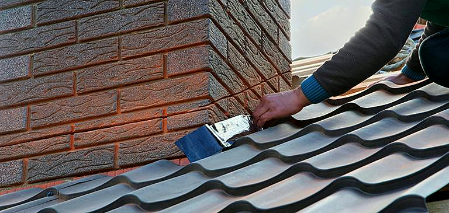
To, co widać nad dachem: stan komina, cegła, czapa i obróbka, a przy okazji dach i rynny.
Nie wiesz, czego potrzebuje komin? Napisz do nas albo wybierz numer +48 726 189 777
Dlaczego Komin-Ms
Sprawdzamy przewód na miejscu. Zakres prac i cenę podajemy, zanim cokolwiek zaczniemy.
Większość prac wykonujemy bez rozbierania komina i bez kucia ścian.
Znamy kominy murowane i nowoczesne systemy kominowe. Jedne i drugie potrafią się z czasem rozszczelnić.
Pracujemy dla domów prywatnych i dla firm: w Szczecinie, Poznaniu i Trójmieście.
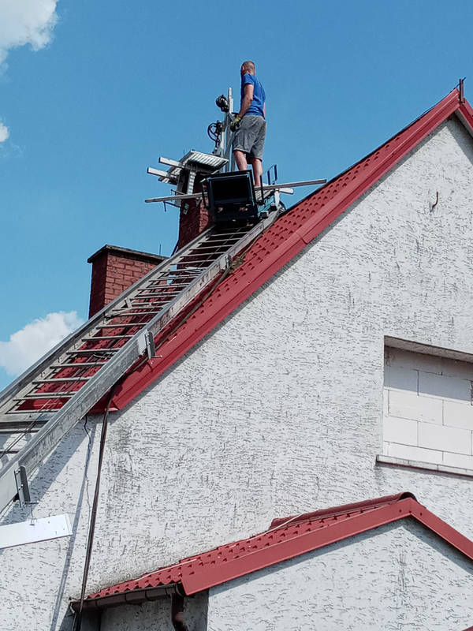
Obszar działania
Szczecin · okolice Szczecina · Stargard
Zapytaj o termin w Szczecinie →Pytania
Kilka odpowiedzi na start. Resztę ustalimy przez telefon albo na oględzinach.
Baza firmy jest w Szczecinie. Zlecenia bierzemy w Szczecinie i okolicach, a także w Poznaniu i w Trójmieście.
Zwykle nie. Większość prac wykonujemy bez rozbierania komina i bez kucia ścian. Jeśli u Ciebie będzie inaczej, powiemy to po oględzinach, przed startem prac.
Rozwiercamy przewód frezem na potrzebną średnicę. Komin zostaje na miejscu, a po frezowaniu mieści się w nim wkład.
Frezowanie komina →Wkłady pod kocioł, piec albo kominek, między innymi alufol oraz wkłady kwasoodporne do kotłów gazowych. Wkład wpuszczamy do istniejącego komina i wyprowadzamy nad dach.
Montaż wkładów →Cena zależy od stanu przewodu i zakresu prac, dlatego podajemy ją po oględzinach, zanim cokolwiek zaczniemy. Napisz albo daj znać telefonicznie, a umówimy termin.
Zapytaj o wycenę →Zadzwoń albo wyślij krótką wiadomość. Powiedz, jaki masz komin i co się z nim dzieje, a ustalimy termin.